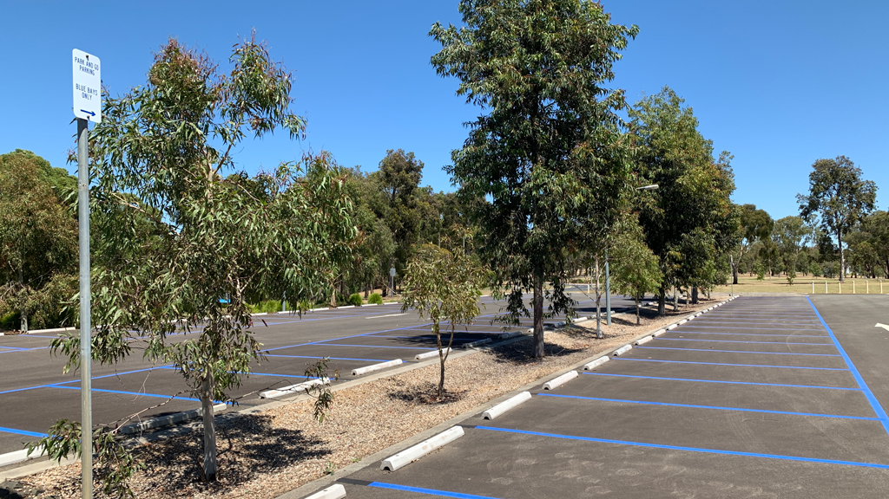

News:

Parking proving to be hot topic among students on website as careless drivers park recklessly on the sidewalk
Events:

DRAKE IS COMING TO DEAKIN!!!!!!!!!! TICKETS ON SALE. FIRST COME, FIRST SERVED!!
SIT223-SIT753 - Professional Practice in IT
Unit details
| Year: |
2023 unit information |
| Enrolment modes: |
Trimester 1: Burwood (Melbourne), Geelong, Cloud (online) |
| Credit point(s): |
1 |
| Unit Chair: |
Trimester 1: Azadeh Ghari Neiat |
| Scheduled Learning Activities: |
1 x 3 hour active class per week, weekly drop in support. |
Content
To be successful IT graduates need to understand the use of industry tools and practices,
the ways these tools work and connect together, and the underlying professional, ethical,
and teamwork knowledge and skills needed to put these into practice in a professional manner.
Hurdle requirement
To be eligible to obtain a pass in this unit, students must meet certain milestones as part of the portfolio.
> Current students